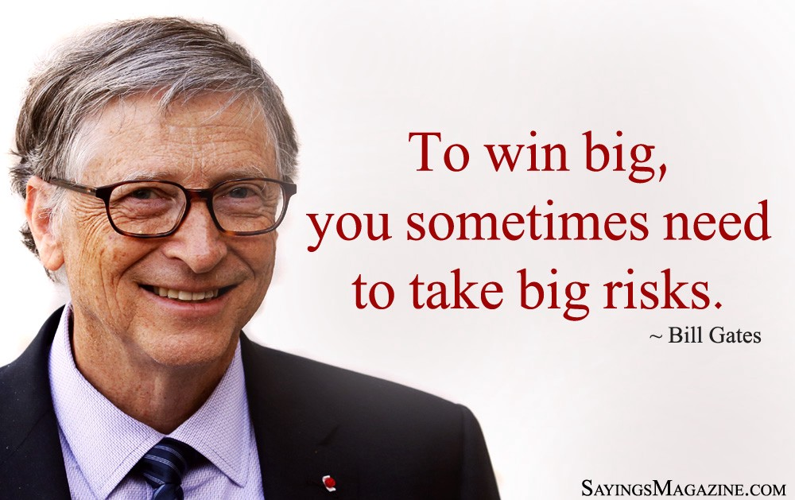
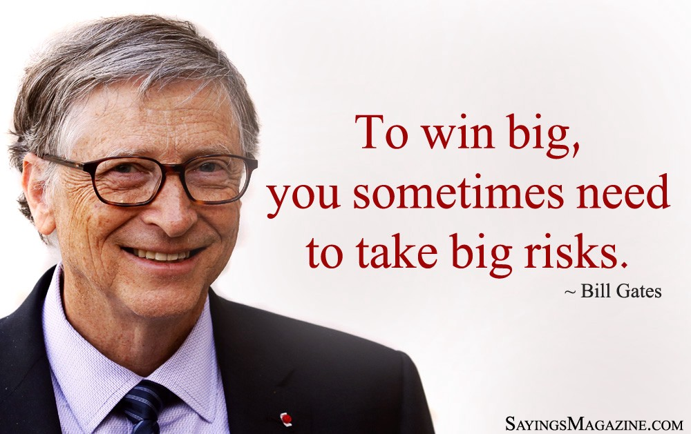

Below you will find an entire gallery of Bill Gates's most important quotes and pictures, along with some brief descriptions. Please note that some images may be blurry simply because of how old they are.
This is Bill Gates holding a vaccine for meningitis during a news conference at the United Nations headquarters in Geneva, Switzerland on May 17, 2011.
Above you will find an image of Bill Gates holding a measles vaccine. He was at a conference in February 2019 warning world-wide anti-vaxxers that they could die without a measles shot. He truly does care about people.
Bill Gates standing with Paul Allen. Without Paul Allen's help, Bill Gates would not have been able to accomplish what he has. Paul always kept Bill motivated and showed him that he wasn't alone with his unusual enthusiasm.
Although Bill Gates is talked about as much, Paul Allen played an equally essential role in creating Microsoft and its rise to the top.
A very emotional Bill Gates on his final day as a board member for Microsoft. His last day was Friday, March 13, 2020. He left to focus more on philanthropic work through the Bill and Melinda Gates Foundation, as well as to focus on climate change and world issues such as poverty, hunger, and disease.
Below you will find a gallery of Bill Gates's most famous and most significant quotes.
 



Sources: https://www.goalcast.com/2017/12/07/27-bill-gates-quotes/
https://www.toppr.com/bytes/quotes-by-bill-gates/
Want to know more about Bill Gates's biggest accomplishments? Click the button below!
Visit the main page for source information and links.